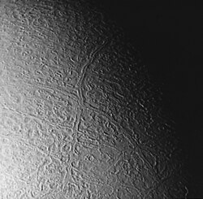
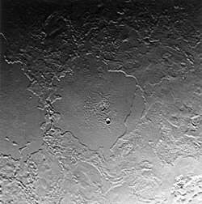
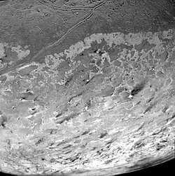

Triton
Triton is the biggest satellite of Neptune.
It was discovered by William Lassell in 1846 shortly after the discovery of Neptune.
It is named after the son of Poseidon in Greek mythology.
It is believed to be a dwarf planet caught by the gravity of Neptune, because of it's retrograde orbit.
Triton is similar to other moons like Ganymede, Europa, and Enceladus in that a subsurface ocean might exist under the surface.
It is similarly geologically active and features diverse regions shaped by cryovolcanism and tectonics.
The surface is covered with frozen nitrogen and has an atmosphere where clouds can form despite its relative thinness.
It has been visited by only one mission - Voyager 1.
There is still a lot to be discovered, so several missions were proposed to revisit Triton.
Triton is named after the Greek sea god Triton, son of Poseidon, who is the Greek equivalent of the Roman Neptune.
The name was first proposed by Camille Flammarion in his 1880 book Astronomie Populaire, but was officially adopted many decades later.
For a time, it was just refered to as "the satellite of Neptune", as it was the only known until the discovery of Nereid in 1949.
Triton was discovered in 1846 by British astronomer William Lassell, just 17 days after the discovery of Neptune.
The discovery was relatively fast thanks to John Herschel writing to Lassell about the newly discovered planet, advising him to search for a satellite.
Orbit and rotation
Triton is the only planetary moon that orbits in retrograde, making it an irregular moon of Neptune.
The orbital period is 5.88 Earth days.
Triton's inclination is -23°, also unusual for a round satellite.
The orbital eccentricity is nearly zero, nearly a perfect circle.
The oddities in Triton's orbit can be explained by Neptune capturing Triton in the Kuiper belt.
Triton is tidally locked to Neptune, like every other known planetary moon.
Triton orbits Neptune at 355 thousand kilometers from the center of Neptune, which is expected to fall further.
In 3.6 billion year, Triton will reach the Roche limit, after which it will collapse and form a new ring system.
Triton is the seventh-largest moon in the Solar System at a diameter of 2,706.8 km and is slightly larger than the dwarf planets Pluto and Eris.
It is also the largest retrograde moon in the Solar System.
With a diameter 5.5% that of Neptune, it is the largest moon of a gas/ice giant relative to its planet in terms of diameter, although Titan is bigger relative to Saturn in terms of mass.
Triton's mean density implies that it probably consists of about 30–45% water ice and other volatiles, with the remainder being rocky material.
Models of its interior show that Triton is differentiated into a solid core, a mantle and a crust.
The core consists of mostly rock and to a lesser extend metal.
The mantle and the crust are mostly water ice and are heated mostly by radioactive decay in the core to create a liquid subsurface ocean.

"Cantaloupe terrain". The cross is formed by Slidr and Tano Sulci.
Only 40% of Triton's surface has been observed and studied, but it may be entirely covered in a thin layer of annealed nitrogen ice.
Triton's surface consists of 55% nitrogen ice, 15-35% water ice and the remaining 10–20% are frozen carbon dioxide.
There are trace amounts of methane, carbon monoxide, and potentially ammonia ice.
Triton's reddish color is most likely the result of the reaction between nitrogen and methane under exposure to ultraviolet and cosmic radiation, forming tholins.
There are different types of terrain on Triton's surface, all very young and lack impact craters.
One of these regions is Bubembe Regio, which is described as "cantaloupe terrain".
It features a series of fissures and depressions reminiscent of a cantaloupe and it is the oldest region on Triton.
This terrain is so far unique to Triton and is possibly a result of diapirism where lighter material emerges above heavier one, resulting in an uneven terrain.
Several sulci cross the cantaloupe terrain, most notably Slidr and Tano Sulci, forming an "X".
An explanation for the sulci is tectonic activity.

Ruach (center), Tuonela (left) Planitiae, and Leviathan Patera (bottom right)
Another region is Monad Regio, characterized by plains and occassional fissures.
There are two types of plains.
One of them is cryovolcanic plains, where volcanic calderas like Leviathan and Kibu Paterae have formed.
They are both located in Cipango Planum, the biggest of these plains we know of.
Near the edge of Abatos Planum, several maculae have been observed - Acupara and Zin Maculae are two of them.
Mazomba, the largest impact crater on Triton (27 km) is located to the north of these maculae.
The other type is walled plains, of which four are known to exist.
They are flat and are possibly cryolava lakes.
Ruach and Tuonela Planitiae are the biggest of these type.

South pole. Dark spots are dust from geysers.
The last region is the Uhlanga Regio at the south pole of Triton.
It is brighter than the other two due to nitrogen and methane ice.
Numerous geysers have been detected in the region.
The eruptions leave behind dark spots of dust.
The plumes are either cryovolcanic in nature, or are the result of solar radiation heating the underlying ices.
A similar region is expected to exist on the north pole, which has remained in darkness during the Voyager flyby.
Triton has an albedo of 0.76, changing slightly since the first observations.
The high albedo causes Triton to reflect a lot of whatever little sunlight there is instead of absorbing it.
This makes it have the coldest recorded temperature in the Solar System at 38 K (−235 °C).
Triton also has a tenuous atmosphere consisting of nitrogen and trace amounts of carbon monoxide and methane.
A troposphere is present, which leads to the formation of clouds.
Triton has been visited by the Voyager 2 mission, which made a flyby of the Neptune system as a whole.
The probe discovered the presence of cryovolcanism and obtained data about the composition of Triton.
The observations have been limited, so Triton has remained a target for future missions, including Trident and Neptune Odyssey by NASA, and Shensuo by CNSA (Neptune and Triton are only considered for a flyby, since the mission's target is the heliosphere's tail)
External links